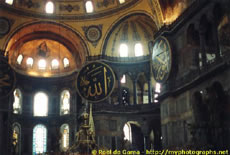

Niyon
anomhma mh monan oyin.
Niyon anomhma mh monan oyin.
Possible translations:
Wash your sin not only your face.
- or -
Cleanse my sin and not my face only.
Spelling and Meaning:
Scholars are not in agreement over what
the meaning of this Greek saying is or how it is supposed to
be spelled. The given spelling on this page seems closest to
the original spelling; the same spelling is found on page 98
of the text An Introduction to Greek by Crosby-Schaeffer.
A better source would be a photograph, which is not available.
The most literal translation seems to be the first one given
above, as anomhma is singular. The actual translation is left
to the reader.
Location:
This text is inscribed on the fountain
in the courtyard of the Hagia Sophia in Constantinople (Istanbul).
It was common for Greeks to put this phrase on fountains.*
The Hagia Sophia is a very beautiful building. Click an image
to see it full size.
From the inside: (Image source)

){kind=link}
From the outside: (Image
source)
)
Here's the fountain: (Image
source)
From a travel website:
"The vast rectangular atrium extending
west of the exonarthex had a peristyle along its four sides.
At the center stood the phiale [fountain of purification] with
the well known inscription that could be read from left to right
and from right to left: Cleanse our sins, not only our face."
Again, the translation may not be correct, but the explanation
of location is as accurate as possible from a couple thousand
miles away.
A Surprise?
"Niyon anomhma
mh monan oyin" is a palindrome! Good job if you picked
this up before reading to here. The Greeks invented palindromes;
a fellow named Sotades of Maronea (275 BC) came up with the concept
and then reportedly proceeded to rewrite the Iliad in palindrome
form.*
Read backwards, his palindromes were obscene and defamatory.
This is pretty funny. However, he went a bit too far with his
good humor, offended Pellius II, and was killed. Unfortunately,
few, if any of his palindromes survived.
A Tygo Studios Production, ©2004.
Thanks for visiting.
){kind=link}
Take a close look at this Latin:
S A T O R
A R E P O
T E N E T
O P E R A
R O T A S
PAlindromes have been being created for over 2000 years, possibly
starting with those created by Sotades of Maronea.